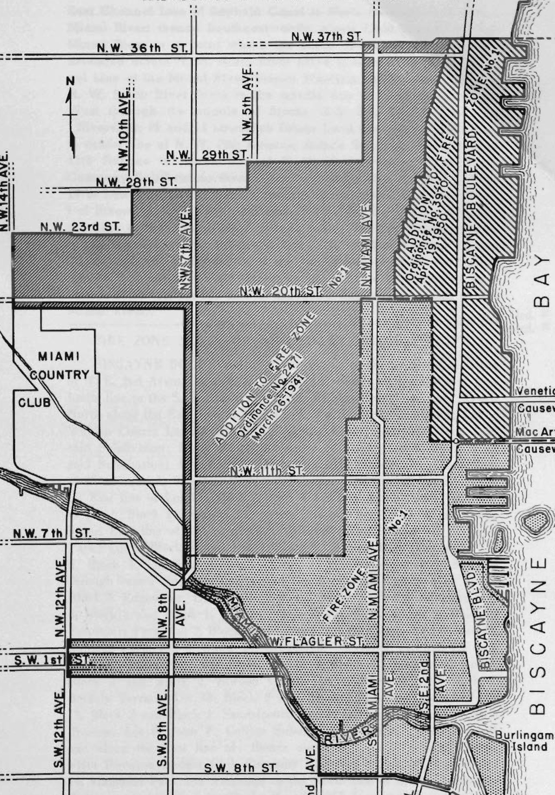

feet (10’) from adjacent property lines shall be protected by doors or windows of one-hour fire-resistive construction as specified in Section 4304. See Section 504 for regulating adjacent buildings on the same property.
Sec. 1004. STAIRS AND EXITS. All Group E buildings shall have not less than two means of egress from each story including basements or cellars unless such basements or cellars are used for heating apparatus only, in which latter case only one exit shall be required.
All stairs and exits shall comply with the requirements specified in Chapter 33.
Smokeproof towers shall be installed as and when specified in Chapter 33.
Where ramps are used for the transfer of automobiles from one floor to another such ramps shall meet the ground floor level at a point not less than twenty (20) feet from the exit from such building.
Sec. 1005. LIGHT, VENTILATION AND SANITATION. All portions of Group E buildings customarily used by human beings shall be provided with light and ventilation by means of windows and/or skylights with an area equal to one-eighth (1/8) of the total floor area or shall be provided with artificial light and mechanically operated ventilating system. The mechanically driven ventilating system shall supply at least thirty (30) cubic feet of pure air per minute for each occupant thereof in all portions of the building and such system shall be kept continuously in operation during such time as the building is occupied.
In all buildings used for the storage or handling of automobiles operated under their own power and in all buildings where inflammable liquids are used exhaust ventilation shall be provided sufficient to produce one complete change of air every fifteen minutes. Such exhaust ventilation shall be taken from a point at or near the floor level.
TOILETS AND FLOORS. All buildings occupied and/or where more than four (4) persons are employed shall be provided with at least one toilet. All buildings and each subdivision thereof occupied and/or where both sexes are employed shall be provided with access to at least two toilets, either located in such building or conveniently located in a building adjacent thereto. The above minimum requirements for uses by persons of the Caucasian race, and where persons other than this race are employed, separate toilets shall be provided.
“For Floor Construction. See Chapter 31.”
Sec. 1006. ENCLOSURE OF VERTICAL OPENINGS. All eleva-
49
tor shafts, vent shafts and other vertical openings shall be enclosed as specified under Types of Construction.
Doors which are part of an automobile ramp enclosure may be kept normally open but shall be equipped with fusible links and so arranged as to be self-closing when released.
Sec. 1007. FIRE EXTINGUISHING APPARATUS. Automatic sprinklers, standpipes and basement pipe inlets shall be installed as and when specified in Chapter 38.
Sec. 1008. SPECIAL HAZARDS. Chimneys and heating apparatus shall conform to the requirements of Chapter 37. In any room in which volatile inflammable liquids are used or stored no device generating a glow of flame capable of igniting gasoline vapor shall be installed or used within twenty-four (24) inches of the floor.
The use, handling, storage and sale of gasoline, fuel oil and other inflammable liquids shall not be permitted in any Group E building unless such use, handling, storage and sale complies with the “Suggested Fire Prevention Ordinance, Edition of 1930, recommended by the National Board of Fire Underwriters,” and its subsequent amendments.
Dry cleaning plants in which combustible solvents are used or stored shall be of Type I construction and shall not exceed one (1) story in height. All partitions shall be of four-hour fire-resistive construction, except for the necessary openings for the vent ducts, piping and shafting. All openings in exterior walls, except wall vents, shall be protected with one-hour fire-resistive doors or windows. Wall vents having an area of not less than sixteen (16) square inches each shall be placed in the exterior walls near the floor line, not less than six (6) feet apart horizontally. Each building shall be provided with a power-driven fan exhaust system of ventilation which shall be arranged and operated so as to produce a complete change of air in each room every three (3) minutes; and shall comply with the requirements of Ordinances No. 873, No. 1109 and No. 1156, and their subsequent amendments. of the City of Miami, Fla.
Each machine in dry cleaning establishments which uses a volatile inflammable liquid shall have an adequate steam line directly connected to it, so arranged as to have the steam automatically released to the inside of such machine should an explosion occur in the machine.
Sec. 1009. EXCEPTIONS AND DEVIATIONS. Public garages shall not be of Type V construction, shall not be of Type III construction when more than two (2) stories in height, and shall be not over six hundred (600) square feet in area or twenty-five (25) feet in height when of Type IV construction.
All public garage floors shall be of incombustible materials and if not placed directly on the ground shall conform to the requirements for floors of Type I construction, or the floors may be of Type II construction properly protected with incombustible materials against saturation by oil and grease.
50
Gasoline filling stations of Type V construction shall have incombustible exterior wall covering.
Division 3 buildings of Group E more than five (5) stories in height shall have all floors of not less than three-hour fire-resistive construction as specified in Section 4303.
PUBLIC GARAGES AND SERVICE STATION GREASE DRAINS. Public Garages, Service Stations, Automobile Laundries and all other places for the washing, polishing and greasing of automobiles, shall have that portion of floor space provided with approved grease drains or traps as required by the Plumbing Department of the City of Miami, Fla.
Sec. 1010. MIXED OCCUPANCIES. Separation of Group E occupancies from all other occupancies shall be provided as specified in Section 503.
Sec. 1011. METER ROOM. All buildings of multiple occupancy connected by electrical service from the public service line or generating plant, shall have an independent central room of not less than three feet by five feet (3’x5’) and seven (7) foot ceiling height with a ventilated door accessible to all occupancies of the building; for the housing of the main switch, disconnecting equipment and its controlled devices and meters for serving the occupants. The construction of this room shall conform to the same types of material and construction as the main building.
CHAPTER 11 REQUIREMENTS FOR GROUP F BUILDINGS
Sec. 1101. GROUP F OCCUPANCIES DEFINED. Each Group F occupancy shall be considered as a separate building and the Group shall include all moderately hazardous industrial and commercial occupancies, such as:
Division 1: Wholesale and retail stores, office buildings, restaurants, undertaking parlors, printing plants, municipal police and fire stations. (Restaurants—See Chapter 13 for State Hotel Requirements.)
Division 2: Factories and workshops using materials not highly inflammable or combustible.
Division 3: Storage and sales rooms for combustible goods.
Sec. 1102. CONSTRUCTION HEIGHT AND AREA ALLOWABLE. Buildings or parts of buildings classed in Group F because of use or the character of the occupancy shall be of Types I, II, III, IV or V Construction and the maximum height and floor areas shall not exceed those specified in the following table:
51
MAXIMUM ALLOWABLE FLOOR AREAS AS DETERMINED BY HEIGHT OF BUILDING, STREET FRONTAGE AND TYPE OF CONSTRUCTION
| Types of Construction | Maximum Height for Corresponding Areas (Feet / Stories) | Maximum Floor Areas (sq. ft.) (Building Fronting on: 1 Street / 2 Streets / 3 or more Streets) | Increase for Complete Sprinkling* |
|---|---|---|---|
| Type I | NO RESTRICTONS | ||
| Type II | 75 ft. / 7 Stories | 12,000 / 15,000 / 18,000 | |
| 55 ft. / 5 Stories | 15,000 / 18,000 / 20,000 | 100% | |
| 65 ft. / 1 Story | 20,000 / 25,000 / 30,000 | ||
| Type III | 55 ft. / 5 Stories | 12,000 / 15,000 / 18,000 | 100% |
| 40 ft. / 1 Story | 18,000 / 22,500 / 25,000 | ||
| Type IV† | No Restrictions / 1 Story | 20,000 / 25,000 / 30,000 | 100% |
| Type V† | 38 ft. / 3 Stories | 5,000 / 6,000 / 7,000 | 100% |
| 20 ft. / 1 Story | 10,000 / 12,000 / 14,000 |
Allowable heights in this section shall not exceed the heights restrictions in section 2307.
Note: *Increase shall not be permitted unless the area is entirely protected by an automatic sprinkler installation as specified in Chapter 38. (Note †See Sections 1602 and 1603 for restrictions in Fire Zones.)
In buildings having rooms with floor areas over thirty thousand (30,000) square feet, tight draft stops shall be installed to prevent a free current of air under the roof. These draft stops in trussed roofs shall extend from the roof down to the bottom chord of the truss and divide the under-roof or attic space into sections not to exceed twenty thousand (20,000) square feet in area.
Sec. 1103. LOCATION ON PROPERTY. All exterior walls or parts of walls, except on street fronts, of Group F buildings which are less than four (4) feet from adjacent property lines shall be of masonry or reinforced concrete. All openings in exterior walls, except on street fronts, which are less than eight (8) feet from adjacent property lines shall be protected by doors or windows of one-hour fire-resistive construction as specified in Section 4304. When openings are placed closer than three (3) feet to property lines other than street fronts, the sum of the widths of such openings shall constitute not more than twenty-five (25) per cent of the total length of the walls affected. See Section 504 for regulating adjacent buildings on the same property.
52
Sec. 1104. STAIRS AND EXITS. Stairs and exits shall be provided as specified in Chapter 33.
Smokeproof towers shall be provided as and when specified in Chapter 33.
Passageways and corridors shall be constructed as specified in Chapter 33.
Sec. 1105. LIGHT, VENTILATION AND SANITATION. All portions of Group F buildings customarily used by human beings shall be provided with light and ventilation by means of windows and/or skylights with an area not less than one-eighth (1/8) of the total floor area or shall be provided with artificial light and a mechanically operated ventilating system. In no case shall less than four changes of air per hour be provided.
TOILETS AND FLOORS. All buildings occupied and/or where more than four (4) persons are employed shall be provided with at least one toilet. All buildings and each sub-division thereof occupied and/or where both sexes are employed shall be provided with access to at least two toilets, either located in such building or conveniently located in a building adjacent thereto. The above minimum requirements for uses by persons of the Caucasian race, and where persons other than this race are employed, separate toilets shall be provided.
“For Floor Construction see Chapter 31.”
Sec. 1106. ENCLOSURE OF VERTICAL OPENINGS. All elevator shafts, vent shafts and other vertical openings shall be enclosed as specified under Types of Construction.
Sec. 1107. FIRE EXTINGUISHING APPARATUS. In any room in which volatile inflammable liquids are used or stored no device generating a glow or flame capable of igniting gasoline vapor shall be installed or used within twenty-four (24) inches of the floor.
Sec. 1108. SPECIAL HAZARDS. Chimneys and heating apparatus shall conform to the requirements of Chapter 37.
No storage of volatile inflammable liquids shall be allowed in Group F buildings and the handling and use of gasoline, fuel oil and other inflammable liquids shall not be permitted in any Group F building unless such use and handling complies with the Suggested Fire Prevention Ordinance, Edition of 1930, recommended by the National Board of Fire Underwriters and its subsequent amendments.
Sec. 1109. EXCEPTIONS AND DEVIATIONS. Roof covering on Type V buildings may be of galvanized iron or sheet metal, applied as specified in Section 4305, sub-paragraph (a), Item 8.
Division 3 buildings of Group F more than six (6) stories in
53
height shall have all floors of not less than three-hour fire-resistive construction as specified in Section 4303.
Sec. 1110. MIXED OCCUPANCIES. Separation of Group F occupancies from all other occupancies shall be provided as specified in Sec. 503.
Sec. 1111. METER ROOM. All buildings of multiple occupancy connected by electrical service from the public service line or generating plant, shall have an independent central room of not less than three feet by five feet (3’x5’) and seven (7) foot ceiling height with ventilated door accessible to all occupancies of the building; for the housing of the main switch, disconnecting equipment and its controlled devices and meters for serving the occupants. The construction of this room shall conform to the same types of material and construction as the main building.
CHAPTER 12
REQUIREMENTS FOR GROUP G BUILDINGS
Sec. 1201. GROUP G OCCUPANCIES DEFINED. Each Group G occupancy shall be considered as a separate building and the Group shall include non-hazardous industrial and commercial occupancies which create a low fire and life hazard, such as:
Division 1: Ice plants, power plants, pumping plants, cold storage, creameries.
Division 2: Factories and workshops using incombustible and/or non-explosive materials.
Division 3: Storage and sales rooms of incombustible and/or non-explosive materials.
Sec. 1202. CONSTRUCTION, HEIGHT AND AREA ALLOWABLE. Buildings or parts of buildings classed in Group G because of use or the character of the occupancy shall be of Types I, II, III, IV or V Construction and the maximum height and floor areas shall not exceed those specified in the following table.
54
MAXMUM ALLOWABLE FLOOR AREA AS DETERMINED BY HEIGHT OF BUILDING, STREET FRONTAGE AND TYPE OF CONSTRUCTION
| Types of Construction | Maximum Height for Corresponding Areas | Maximum Floor Areas (sq. ft.) | Increase for Complete Sprinkling* | |||
|---|---|---|---|---|---|---|
| Feet | Stories | Building Fronting On | ||||
| 1 Street | 2 Street | 3 or more Streets | ||||
| Type I | NO RESTRICTONS | |||||
| Type II | 75 ft. | 7 Stories | 15,000 | 18,000 | 20,000 | 100% |
| 55 ft. | 5 Stories | 20,000 | 25,000 | 30,000 | ||
| 65 ft. | 1 Story | UNRESTRICTED | ||||
| Type III | 55 ft. | 5 Stories | 12,000 | 15,000 | 18,000 | 100% |
| 40 ft. | 1 Story | 20,000 | 25,000 | 30,000 | ||
| Type IV | No Restrictions | 1 Story | 25,000 | 30,000 | 35,000 | 100% |
| Type V† | 38 ft. | 3 Stories | 10,000 | 12,500 | 15,000 | 100% |
| 20 ft. | 1 Story | 12,000 | 15,000 | 18,000 |
Allowable heights in this section shall not exceed the height restrictions in Sec. 2307.
NOTE: *Increase shall not be permitted unless the area is entirely protected by an automatic sprinkler installation as specified in Chapter 38. (Note: †See Sections 1602 and 1603 for restrictions in Fire Zones.)
In buildings having rooms with floor areas of over thirty thousand (30,000) square feet, tight draft stops shall be installed to prevent a free current of air under the roof. These draft stops in trussed roofs shall extend from the roof down to the bottom chord of the truss and shall divide the under-roof or attic area into sections not to exceed twenty thousand (20,000) square feet in area.
Sec. 1203. LOCATION ON PROPERTY. All exterior walls or parts of walls, except on street fronts, of Group G buildings which are less than three (3) feet from adjacent property lines shall be of not less than one-hour fire-resistive construction as specified in Section 4302. When openings are placed closer than three (3) feet to property lines other than street fronts, the sum of the widths of such openings shall constitute not more than twenty-five (25) per cent of the total length of the walls affected. See Section 504 for regulating adjacent buildings on the same property.
55
Sec. 1204. STAIRS AND EXITS. Stairs and exits shall be provided as specified in Chapter 33.
Smokeproof towers shall be provided, as and when required, in Chapter 33.
Passageways and Corridors shall be provided as required in Chapter 33.
Sec. 1205. LIGHT, VENTILATION AND SANITATION. All portions of Group G buildings customarily used by human beings shall be provided with light and ventilation.
TOILETS AND FLOORS. All buildings occupied and/or where more than four (4) persons are employed shall be provided with at least one toilet. All buildings and each subdivision thereof occupied and/or where both sexes are employed shall be provided with access to at least two toilets, either located in such building or conveniently located in a building adjacent thereto. The above minimum requirements for uses by persons of the Caucasian race, and where persons other than this race are employed, separate toilets shall be provided.
“For Floor Construction see Chapter 31.”
Sec. 1206. ENCLOSURE OF VERTICAL OPENINGS. Except as specified in Chapter 33, vertical openings are not required to be enclosed.
Sec. 1207. FIRE EXTINGUISHING APPARATUS. Automatic sprinklers, standpipes and basement pipe inlets shall be installed as and when specified in Chapter 38.
Sec. 1208. SPECIAL HAZARDS. Chimneys and heating apparatus shall conform to the requirements of Chapter 37. In any room in which volatile inflammable liquids are used or stored, no device generating a glow or flame capable of igniting gasoline vapor shall be installed or used within twenty-four (24) inches of the floor.
The storage, use and handling of gasoline, fuel oil and other inflammable liquids shall not be permitted in any Group G building unless such storage and handling complies with the Suggested Fire Prevention Ordinance, Edition of 1930, recommended by the National Board of Fire Underwriters, and its subsequent amendments.
Sec. 1209. EXCEPTIONS AND DEVIATIONS. Roof covering on Type V buildings may be of galvanized iron or sheet metal applied as specified in Section 4305 Sub-paragraph (A) item 8. Fireproofing of the under side of all roof framing of Group G buildings may be omitted in all types of Construction.
Sec. 1210. MIXED OCCUPANCIES. Separation of Group G occupancies from all other occupancies shall be provided as specified in Section 503.
Sec. 1211. METER ROOM. All buildings of multiple occupancy
56
connected by electrical service from the public service line or generating plant shall have an independent central room of not less than three by five feet (3’x5’) and seven (7’) foot ceiling height with a ventilated door accessible to all occupancies of the building; for the housing of the main switch, disconnecting equipment and its controlled devices and meters for serving the occupants. The construction of this room shall conform to the same types of material and construction as the main building.
CHAPTER 13
REQUIREMENTS FOR GROUP H BUILDINGS
Sec. 1301. GROUP H OCCUPANCIES DEFINED. Each Group H occupancy shall be considered as a separate building and the Group shall include:
Division 1: Hotels, apartment houses, dormitories, restaurants, rooming houses.
Division 2: Convents, monasteries, old people’s homes (accommodating ten or more persons).
Sec. 1302. CONSTRUCTION HEIGHT AND AREA ALLOWABLE. Buildings or parts of buildings classed in Group H because of use or the character of the occupancy shall be of Types I, II, III, IV or V construction and the maximum height and floor areas shall not exceed those specified in the following table.
All buildings coming under the jurisdiction of the Florida Hotel State Commission shall conform to the current Rules Governing Construction of Hotels, Apartment Houses, Rooming Houses and Restaurants, as adopted and promulgated by the Hotel Commission, in accordance with the laws of the State of Florida, with the exception that in any instance wherein such regulations are less restrictive than this Code, this Code shall apply.
57
MAXIMUM ALLOWABLE FLOOR AREAS AS DETERMINED BY HEIGHT OF BUILDING, STREET FRONTAGE AND TYPES OF CONSTRUCTION
| Types of Construction | Maximum Height for Corresponding Areas | Maximum Floor Areas (Sq. Ft.) | Increase for Complete Sprinkling* | |||
|---|---|---|---|---|---|---|
| Feet | Stories | Building Fronting on | ||||
| 1 Street | 2 Streets | 3 or more Streets | ||||
| Type I | NO RESTRICTIONS | |||||
| Type II | 55 ft. | 3 Stories | 15,000 | 18,000 | 20,000 | 100% |
| 65 ft. | 1 Story | 20,000 | 25,000 | 30,000 | ||
| Type III | 55 ft. | 3 Stories | 12,000 | 15,000 | 18,000 | 100% |
| 40 ft. | 1 story | 18,000 | 20,000 | 22,500 | ||
| Type IV† | 45 ft. | 1 Story | 15,000 | 18,000 | 22,500 | 100% |
| Type V§‡† | 38 ft. | 2 Stories and Attic | 6,000 | 7,000 | 8,000 | 100% |
| 20 ft. | 1 Story | 8,000 | 9,000 | 10,000 |
Allowable heights in this section shall not exceed the height restrictions in Section 2307.
NOTE—*Increases shall not be permitted unless the area is entirely protected by an automatic sprinkler installation as specified in Chapter 38.
†Prohibited for one (1) exit type apartments and residential apartments. (See State Hotel Code.)
(§See Sections 1602-1603 for restrictions in Fire Zones.)
Sec. 1303. LOCATION ON PROPERTY. All exterior walls or parts of walls, except on street fronts, of Group H buildings which are less than three (3) feet from adjacent property line shall be of not less than one-hour fire-resistive construction as specified in Section 4302. All openings in exterior walls except on street fronts, which are less than five (5) feet from adjacent property lines shall be protected by doors or windows of one-hour fire-resistive construction as specified in Section 4304. When openings are placed closer than three (3) feet to property lines other than street fronts, the sum of the width of such openings shall constitute not more than twenty-five (25) per cent of the total length of the walls affected. See Section 504 for regulating adjacent buildings on the same property.
58
Sec. 1304. STAIRS AND EXITS. Stairs and exits shall be provided as specified in Chapter 33.
Smokeproof towers shall be provided as and when specified in Chapter 33.
All stairs and exits in Group H buildings shall open directly upon a street or alley or upon a yard or court not less than four (4) feet in width directly connected to a street or alley by means of a passageway not less in width than the stairway opening into such passageway and not less than seven (7) feet in height.
Passageways and corridors shall be provided as required in Chapter 33.
Sec. 1305. LIGHT, VENTILATION AND SANITATION. All rooms of Group H buildings used for eating, living and/or sleeping purposes shall be provided with light and ventilation by means of windows with an area of not less than fifteen (15) per cent of the total floor area of such room or rooms.
TOILETS AND FLOORS. Every building of Division 1 occupancies in this Group shall be provided with toilet and toilet rooms as required by the “Current Rules Governing Construction of Hotels, Apartment Houses, Rooming Houses and Restaurants” as promulgated by the Department of Hotel Commission of the State of Florida. Every building of Division 2 occupancies in this Group shall be occupied and/or where more than four or more persons are employed shall be provided with at least one (1) toilet. All buildings and each subdivision thereof occupied and/or where both sexes are employed shall be provided with access to at least two (2) toilets, either located in such building or conveniently located in a building adjacent thereto. The above minimum requirements for uses by persons of the Caucasian race and where persons other than this race are employed, separate toilets shall be provided.
Toilets shall not open directly into a Restaurant, Kitchen or public place where food is served, except through a vestibule.
“For Floor Construction see Chapter 31.”
Sec. 1306. ENCLOSURE OF VERTICAL OPENINGS. All elevator shafts, vent shafts, stairways and other vertical openings shall be enclosed as specified under Types of Construction.
Sec. 1307. FIRE EXTINGUISHING APPARATUS. Automatic sprinklers, standpipes and basement pipe inlets shall be installed as and when specified in Chapter 38.
Sec. 1308. SPECIAL HAZARDS. Chimneys and heating apparatus shall conform to the requirements of Chapter 37.
Every boiler room or room containing a central heating plant using solid or liquid fuel shall be separated from the rest of the building by a “Special Fire Separation” as specified in Section 503.
The storage and handling of gasoline, fuel oil and other inflam-
69
mable liquids shall not be permitted in any Group H building, unless such storage and handling complies with the suggested ordinance regulating the Use, Handling, Storage and Sale of Inflammable Liquids and the Products Thereof, adopted by the National Fire Protection Association May, 1926, and its subsequent amendments. All doors leading into rooms in which volatile inflammable liquids are used or kept shall be of one-hour fire-resistive construction as specified in Section 4304 and shall be kept normally closed.
Sec. 1309 Reserved.
Sec. 1310. MIXED OCCUPANCIES. Separations between Group H occupancies and all other occupancies shall be provided as specified in Section 503.
Sec. 1311. METER ROOM. All buildings of multiple occupancy connected by electrical service from the public service line or generating plant shall have an independent central room of not less than three feet by five feet (3’x5’) and seven (7) foot ceiling height with a ventilated door accessible to all occupancies of the building; for the housing of the main switch, disconnecting equipment and its controlled devices and meters for serving the occupants. The construction of this room shall conform to the same types of material and construction as the main building.
CHAPTER 14 REQUIREMENTS FOR GROUP I BUILDINGS
Sec. 1401. GROUP I OCCUPANCY DEFINED. Each Group I occupancy shall be considered as a separate building and the Group shall include dwellings and garage apartments accommodating not more than two (2) families, or hospitals and sanitariums accommodating not more than six (6) patients.
Sec. 1402. CONSTRUCTION, HEIGHT AND AREA ALLOWABLE. Buildings or parts of buildings classed in Group I because of use or the character of the occupancy shall be of Types I, II, III, IV* or V* construction. The floor areas of Types I and II shall be unlimited, the floor area of Types III and IV shall be limited to ten thousand (10,000) square feet, and the floor area of Type V shall be limited to seventy-five hundred (7500) square feet.
(*See Sections 1602 and 1603 for restrictions in Fire Zones.)
Sec. 1403. LOCATION ON PROPERTY. All exterior walls or parts of walls (including windows or doors), except on street fronts, of Group I buildings which are less than three (3) feet from adjacent property lines shall be of not less than one-hour fire-resistive construction as specified in Section 4302. When openings are placed closer than three (3) feet to property lines other than street fronts, the sum of the widths of such openings shall constitute not more than twenty-five
60
(25) per cent of the total length of the walls affected. (See Section 504 for regulating adjacent buildings on the same property.)
Sec. 1404. STAIRS AND EXITS. Stairs and exits shall be provided as and when specified in Chapter 33.
Sec. 1405. LIGHT, VENTILATION AND SANITATION. All rooms of Group I buildings used for eating, living and/or sleeping purposes shall be provided with light and ventilation by means of windows with an area not less than one-eighth (1/8) of the total floor area of such room or rooms.
Every bath and toilet room shall have at least one window of not less than three and one-half (3½) square feet in area, opening through the outer wall of the building, or shall be ventilated by a wall or ceiling vent of not less than two (2) square feet net area.
Sec. 1406. ENCLOSURE OF VERTICAL OPENINGS. Stairs in Group I buildings need not be enclosed. Dumb-waiter shafts, clothes chutes and other similar vertical openings shall be protected as specified in Section 3003.
Sec. 1407. FIRE EXTINGUISHING APPARATUS. Fire extinguishing apparatus when installed shall conform to the requirements of Chapter 38.
Sec. 1408. SPECIAL HAZARDS. Chimneys and heating apparatus shall conform to the requirements of Chapter 37.
Inflammable liquids shall not be stored or used in Group I buildings in quantities in excess of one (1) gallon and all such inflammable liquids shall be kept in tight or sealed containers when not in actual use.
Sec. 1409. EXCEPTIONS AND DEVIATIONS. Dwellings constructed on the roof of multiple storied buildings shall be considered as an additional story in so far as the construction, location, exposure, stairs, exits and fire extinguishing apparatus is concerned.
Sec. 1410. MIXED OCCUPANCIES. Separation of Group I occupancies from all other occupancies shall be provided as specified in Section 503.
Sec. 1411. ATTACHED GARAGES. When a private garage is located underneath or attached to or included in Group I occupancy, the following regulations as to its construction shall be rigidly observed:
The ceiling construction above the garage, when it is located beneath a Group I occupancy, or the roof when the garage is attached to a Group I occupancy, shall be unpierced and shall have a fire-resistance of at least one (1) hour, as specified in Chapter 43. The floor of the garage may be of earth fill or any incombustible material.
61
The floor of any Group I building shall be not less than seven (7) inches above the garage level. Walls, partitions and the under side of any stairway of the garage portion shall be of at least one (1) hour fire-resistive construction, as specified in Chapter 43.
Openings into the garage shall be restricted to a single doorway; such openings shall be protected by a solid slab wood door, not less than one and three-eighths (1⅜″) inch thick at all points, or a metal-covered door, or other closure of equivalent or greater fire-resistance, mounted so as to be gravity closing, or with spring hinges or door closers. No glass shall be permitted in such wood slab doors.
VENTILATION. “See Section 1505.”
Sec. 1412. CEILING HEIGHTS. All ceilings except bathroom shall have a clear height of eight feet four inches (8′-4″) minimum.
Sec. 1413. METER ROOM. All buildings of multiple occupancy connected by electrical service from a public service line or generating plant shall have an independent central room of not less than three feet by five feet (3′x5′) and seven (7) foot ceiling height with a ventilated door accessible to all occupancies of the building; for the housing of the main switch, disconnecting equipment and its controlled devices and meters for serving the occupants. The construction of this room shall conform to the same type of material and construction as the main building.
CHAPTER 15 REQUIREMENTS FOR GROUP J BUILDINGS
Sec. 1501. GROUP J BUILDINGS DEFINED. Each Group J building or occupancy shall be considered as a separate building and the Group shall include:
Division 1: Private Garages. Division 2: Accessory buildings and structures such as sheds, fences over five (5) feet high, water tanks and towers. Division 3: Stadiums, reviewing stands and amusement park structures.
Sec. 1502. CONSTRUCTION, HEIGHT AND AREA ALLOWABLE. Buildings or parts of buildings classed in Group J because of the use or the character of the occupancy shall be of Types I, II, III, IV* or V* construction as regulated by the requirements of Chapter 16. The floor area of Types I and II construction shall not be limited, the floor area of Types III and IV shall be limited to ten thousand (10,000) square feet and buildings of Type V construction shall not exceed one thousand (1,000) square feet in area and/or two (2) stories in height, except that such restriction of Type V* construction shall not apply to stadiums, reviewing stands or amusement park structures of the open skeleton-framed type. (*See Sections 1602 (F) and 1603 (F) for restrictions and special permit required in Fire Zones.)
62
Reviewing stands and amusement park structures shall be designed and constructed in a substantial manner so as to fully withstand all impact loads in addition to the static loads specified in Chapter 23. (See Appendix, Section 1502, for recommendations as to temporary stands.)
Events under canvas shall be termed as temporary structures and may have seating accommodations constructed of wood or iron or a combination of these two materials, provided the construction as contemplated and as erected is in accordance with the provisions of this Code. Permit for these structures shall be issued to cover a period of not exceeding six (6) months and may then be renewed for another six (6) months upon the payment of the proper fee if the structure is found safe and substantial by the Building Inspector.
Sec. 1503. LOCATION ON PROPERTY. All exterior walls or parts of walls (including windows or doors), except on street fronts, of Group J buildings which are less than three (3) feet from adjacent property lines shall be of not less than one-hour fire-resistive construction as specified in Section 4302. (See Section 504 for regulating adjacent buildings on same property.)
Sec. 1504. RAMPS, STAIRS, EXITS, AISLES AND SEATS. (a) Stairs and exits for amusement park devices shall be provided as specified in Chapter 33, except that stairs and ramps in buildings not exceeding two stories in height need not be enclosed. (See Section 3310 for Ramps.)
(b) Stairs, exits aisles and seating for stadiums and reviewing stands shall be as follows:
-
Stairs. All stairs shall have a rise of not more than seven and one-half (7½) inches and a tread of not less than ten (10) inches not including the nosing. (See Section 3310 for Ramps.)
-
Exits. There shall be provided one exit not less than seven (7) feet wide for each two thousand (2000) persons or major fraction thereof which the stadium or reviewing stand is designed to seat. Such exits shall be spaced not more than seventy-five (75) feet apart. Passageways serving such exits shall be not less than seven (7) feet in clear height nor less than seven (7) feet in clear width.
-
Aisles. Aisles not less than three feet six inches (3’ 6”) in width shall be provided so that there are not more than twenty (20) seats between any seat and aisle.
-
Seats. Where seats are not spaced or marked off in any stadium or reviewing stand, a distance of eighteen (18) inches along any bench or platform shall constitute one seat in computing the
63
required aisles, stairs and exits. Seats shall be spaced not less than twenty-six (26) inches back to back and where backs are provided for the seats they shall be spaced thirty (30) inches back to back.
Where the space under the stadium or reviewing stand is used for any purpose whatsoever, exits passing through this space shall be separated therefrom by walls, floors and ceilings of not less than one-hour fire-resistive construction.
Sec. 1505. LIGHT, VENTILATION AND SANITATION. Private garages which are constructed in conjunction with any Group H or I buildings and which have openings into such buildings shall be equipped with fixed louvered or screened openings or exhaust ventilation with exhaust openings located at least six (6) feet above the floor. The clear area of the louvered openings or the openings into the exhaust ducts shall be not less than sixty (60) square inches per car stored in such private garage. Under no circumstances shall a private garage have any opening into the living or sleeping room.
Amusement park structures which have enclosed spaces open to and used by the public shall be provided with light and ventilation, either natural or artificial, sufficient for safe and healthful conditions.
TOILETS AND FLOORS. All buildings occupied and/or where more than four (4) persons are employed shall be provided with at least one toilet. All buildings and each subdivision thereof occupied and/or where both sexes are employed shall be provided with access to at least two toilets, either located in such building or conveniently located in a building adjacent thereto. The above minimum requirements for uses by persons of the Caucasian race, and where persons other than this race are employed, separate toilets shall be provided.
“For Floor construction see Chapter 31.”
Sec. 1506. ENCLOSURE OF VERTICAL OPENINGS. Elevator shafts, vent shafts, stair-wells and similar vertical openings shall be enclosed as specified in Chapter 30 when extending through three (3) or more stories.
Sec. 1507. FIRE EXTINGUISHING APPARATUS. Fire extinguishing apparatus shall be installed as and when specified in Chapter 38 and as required by the Fire Department of the City of Miami.
Where more than three automobiles are stored in any private garage there shall be installed not less than one chemical extinguisher to each five cars or major fraction thereof.
Sec. 1508. SPECIAL HAZARDS. Chimneys and heating apparatus shall conform to the requirements of Chapter 37.
Inflammable liquids shall not be stored, handled or used in Group J buildings unless such storage or handling shall comply with the Suggested Fire Prevention Ordinance, Edition of 1930, recommended by the National Board of Fire Underwriters, and its subsequent amendments.
64
Sec. 1509. EXCEPTIONS AND DEVIATIONS. When storage space, termed by this Code a private garage, is designed, used or provides for the storage of more than ten (10) automobiles, such storage space shall be deemed a public garage.
Amusement park structures into which the public is admitted, other than those of the open frame type of construction, when more than one story or two hundred (200) square feet in area shall have the exterior walls, bearing partitions and floors of not less than one-hour fire-resistive construction as specified in Chapter 43.
Sec. 1510. MIXED OCCUPANCIES. Separation of Group J occupancies from any other occupancies shall be provided as specified in Section 503 and in Section 1509.
PART IV CHAPTER 16 RESTRICTIONS IN FIRE ZONES
Sec. 1601. FIRE ZONES DEFINED. The entire city of Miami, Florida, is hereby declared to be and is hereby established a Fire District and said Fire District shall be known and designated as Fire Zones One, Two and Three. Fire Zone No. 1 (or “Fire District”) shall include such territory or portions of the City as outlined in this Section. Fire Zone No. 2 (or “Secondary Fire District”) shall include such territory or portions of the City as outlined in this Section. Fire Zone No. 3 shall include all other territory or portions of the City not otherwise included in Fire Zones No. 1 and No. 2. Wherever reference is made to any Fire Zone, it shall be construed to mean one of the three Fire Zones designated and referred to in this Section.
Moving of all buildings in Fire Zones One, Two and Three shall be subject to the requirements of Section 201 of this Code (and Sections 1602, 1603).
FIRE ZONE NO. 1 (OR “FIRE DISTRICT”). Starting at the mouth of the Miami River and extending North along harbor line of Biscayne Bay to center line of N. E. 13th Street; thence West on N. E. 13th Street to center line of N. E. 2nd Avenue; thence North on N. E. 2nd Avenue to center line of N. E. 20th Street; thence West on N. E. 20th Street to center line of Block 20 of Johnson & Waddell Addition; thence South on center line of Blocks 20, 21, 30, 40 and 41 of Johnson & Waddell Addition to center line of N. W. 14th Street; thence West on center line of N. W. 14th Street to center line of Block Japes or Sosts’ Addition; thence South on center line of Blocks 2, 8 and 11 of Japes or Sosts’ Addition, 7-N, 14-N, 27-N, 34-N, 47-N and 54-N to center line of Block 67-North; thence West on center line of Blocks 67-N, 68-N, 69-N, 70-N and 14, Spring Garden Subdivision, to East Channel line of Seybold Canal. South on
65
FIRE ZONE No.1
ADDITIONS RECOMMENDED BY THE CITY PLANNING BOARD AND ADOPTED BY THE CITY COMMISSION

FIRE ZONE No.1 BOUNDARY PLAT City of MIAMI, Florida. Dept. of Engineering Division of Building 65A
East Channel Line of Seybold Canal to North Channel Line of the Miami River; thence Southeastwardly along Channel Line of the Miami River to a point where the North line of N. W. 1st Street extended across N. W. North River Drive intersects the East Channel Line of the Miami River; thence Westerly across the River and N. W. South River Drive to the middle line of Block 10-S; thence West through the middle of Blocks 10-S, 9-S, 8-S, 3 Riverside, I Riverview, 13 and 14 Lawrence Estate Land Company Subdivision to center line of N. W. 12th Avenue; thence South on center line of 12th Avenue to center line of Block 18, Lawrence Estate Land Company Subdivision; thence east on center line of Block 18 and 17 of Lawrence Estate Land Company Subdivision, K of Riverview, I of Riverside, 15-S, 16-S, 17-S and 18-S to the North side of Channel Line of the Miami River; thence along the East Channel Line of the Miami River to the center line of S. W. 2nd Avenue; thence South on S. W. 2nd Avenue to the center line of S. W. 8th Street; thence East on S. W. 8th Street to harbor line of Biscayne Bay; thence North on harbor line of Biscayne Bay to the mouth of the Miami River.
Refer to Page 315 Ord. # 2471 Ord. # 3970
FIRE ZONE NO. 2 (OR ‘SECONDARY FIRE DISTRICT’)
BISCAYNE BOULEVARD. Commencing at the present fire limits at N. E. 2nd Avenue and N. E. 13th Street; thence east along said Fire limits line to the S. E. corner of Lot 18, Walden Court Addition; thence North along the East line of Lots 18-17, Walden Court Addition; Lot 5, Walden Court; Lot 13, Block 3, Pershing Court; Lots 13, Block 1 of said Subdivision; Lot 8, Block 2, Garden of Eden; Lot 8, Block 1, of said Subdivision; Lots 60, 25, 14, Nelson Villa Subdivision; East lines of Lot 31 and 4, Biscayne Park Subdivision; East line of Lot 10, Block C; East line of Lot 12, Block 3, Rice & Sullivan Subdivision; East line of Lot 6. Block 14 through the center line of alley, Block 9, and Block 6 and East line of Lot 6, Block 1. Miramar; Lot 10 and 9-A of Coral Park; Lot 9, Block 4, and Lot 9. Block 1. Bayside Park Amended; Lot 6, Block 3. Lot 5 of Block 1. Bayonne Subdivision, Lot 4, Block 8 through center line of Block 7 and Block 6 along East line of Lot 4, Block 5. Edgewater, Lot 13, Block 4 and Block 1, Bird Subdivision, Lot 6, Block 4 and Block 1, Banyan Place. Lot 2, Block 4, Lot 2, Block 3, Escotonia Park, Lot 2, Block 4 and Block 3, Cold Court, Lots 39 and 12, Bankers Park. Lot 9, Block 11, Broadmoor Amended, through the center line of Block 10 and Block 5. Lot 9, Block 1, Broadmoor, Lot 3, Block 3 and Block 2. Elwood Court, Lot 2, Block 3 and Block 2, Beverly Terrace, Lot 13. Block 2 and Block 1, Beverly Amended, Lot 13, Block 2 and Block 1. Sandricourt. Lot 9, Jeffreys and Robbins Subdivision. Lot 6. John F. Collins Subdivision, through unplatted lands and along the East line of; thence north of Lots 26 and 25, Buena Vista Biscayne Badger Club Company Plat No. 1, Lots 30, 42, 53 and 14, Magnolia Park 2nd Amended to the North line of said Subdivision; thence continuing in a northerly direction 150 feet east of and parallel to center line of Biscayne Boulevard to the S. E. corner of Lot 1, Block
66
24, Bayshore; thence northerly along East side of Lots 1, 2, 3 and 4, Block 24, Bayshore, Lots 1, 2, 3 and 4, Block 23, Lots 1, 2, 3 and 4, Block 16, Lots 1, 2, 3 and 4, Block 12, Lots 2, 5, 6, 7 and 8, Block 5, Lots 9, 10, 11 and 12, Block 6, Bayshore; thence North along East line of White’s Lemon City Corrected, Lots 3, Block 1 and Block 2, Knight’s Addition, Lots 5 and 6, Fallesen Park 2nd Amended; thence North to East line of Lot 6, Arlington, continuing North on the East line of Lots 6 and 4, Arlington Subdivision, continuing North to East line of Lot 3, Block 3, South Elmira; thence North along East line of Lot 3, Block 3 and Block 2, South Elmira, Lots 6 and 5, Elmira, Lots 3, 2 and 1, Block 2 and Block 1, Baywood 1st Addition, Lots 68 and 2, Arcadia, Lots 2 and 1, Block 1, Baywood on East Line of Lots 101, 1 and 2, Washington Place, through center line of alley, Blocks 1, 7 and 8 and 21, Belle Meade, Blocks 7 and 2, Aqua Marine, and along west line of Lot 9, Block 1, Aqua Marine, continuing North along the West line of Lot 10, Block D and Lots 18 and 27, Block C, through center line of alley in Block B of Commercial Shore Crest, Blocks 18, 10, 9, 3 and 2 of Shore Crest; thence North through Lots 62, 29, 30, 32 and 33, Biscayne Heights 2nd Amended parallel to and 100 feet East of the East line of N. E. 6th Avenue through center line of alley in Blocks 2, 3 and 5, North Shore Crest; thence through Lots 19, 18, 17, 16, 20, 11, 10, 9, 8 and 7, Ashbury Park, parallel with and 100 feet distant from the East line of Federal Highway along East line of Lots 1 to 11, inclusive, Block 2, Federal Plaza, Lots 6 to 1, inclusive, Block 64, Miami Shores Section No. 3; thence through Block 66 of said subdivision and a tract of land parallel with and 100 feet distant from the East line of Federal Highway, continuing parallel with said Highway along the Easterly lines of Lots 16 to 10, inclusive, Blocks 76, Lots 9 to 5, inclusive, Block 77 and through Lots 4 to 1, inclusive, Block 79, parallel with and 100 feet distant from East line of Federal Highway, continuing along the Easterly line of Lots 22 to 19, inclusive, Block 179, Lots 21 to 17, inclusive, Block 178, Lots 14 to 10, inclusive, Block 177, Lots 21 to 17, inclusive, Block 176, Lots 13 to 8, inclusive, Block 175, of said subdivision; thence Easterly through Block 3, Julia D. Tuttle, parallel with and 100 feet distant from the East line of Federal Highway to the South line of Block 10, Biscayne Shores unit No. 3; thence East to the S. E. corner of Lot 2; thence North along the East line of Lots 2 and 1, Block 10, Lots 13, 12, 2 and 1, Block 11, through the center line of Block 12, Biscayne Shores Unit No. 3 and center line of Block 11, Biscayne Shores Unit No. 2 and the East line of Block 3, Biscayne Shores Unit No. 2; thence along the Dixie Highway to the South line of Block 4, Bay Ridge amended; thence East along said South line of the S. E. corner of Lot 5, Block 4, Bay Ridge Amended, along the West line of Lot 6, Block 4 and Block 3, Bay Ridge Amended, Lot 16, Block 8, Lot 17, Block 5, Biscayne Shores Amended; Lot 23, Block 2, Lot 22, Block 1, Vista Biscayne; Lot 4, Block 1 and 2, Water View Park; thence through a tract of land parallel to and 100 feet distant from the East line of Federal Highway; thence through center line of alley in Blocks 301, 304, 306, 309, 312 and 330 to City Limits; thence
67